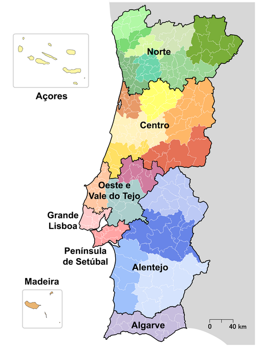

Portugal Continental é a designação atribuída ao território continental português, situado na Península Ibérica. É uma das três NUTS 1 de Portugal. A designação é usada para diferenciar o território continental (o Continente) dos arquipélagos atlânticos dos Açores e da Madeira (as ilhas ou regiões autónomas). Compreende 278 dos 308 municípios, 89 015 km² dos 92 145 km² do território nacional (96,6%), e 9 857 593 dos 10 344 802 habitantes que nele habitam (95,3%). Situado no extremo sudoeste europeu, Portugal Continental faz fronteira apenas com um outro país, Espanha a Este e a Norte, a Oeste e a Sul é limitado pelo Atlântico. O território é dividido no continente pelo rio principal, o Tejo. A norte, a paisagem é montanhosa nas zonas do interior com planaltos, intercalados por áreas que permitem o desenvolvimento da agricultura. A sul, até ao Algarve, o relevo é caraterizado por planícies, sendo as serras esporádicas. Como já foi referido portugal continental é dividido em sete regiões nacionais: Norte, Centro, Oeste e Vale do Tejo, Grande Lisboa, Península de Setúbal, Alentejo, Algarve.
